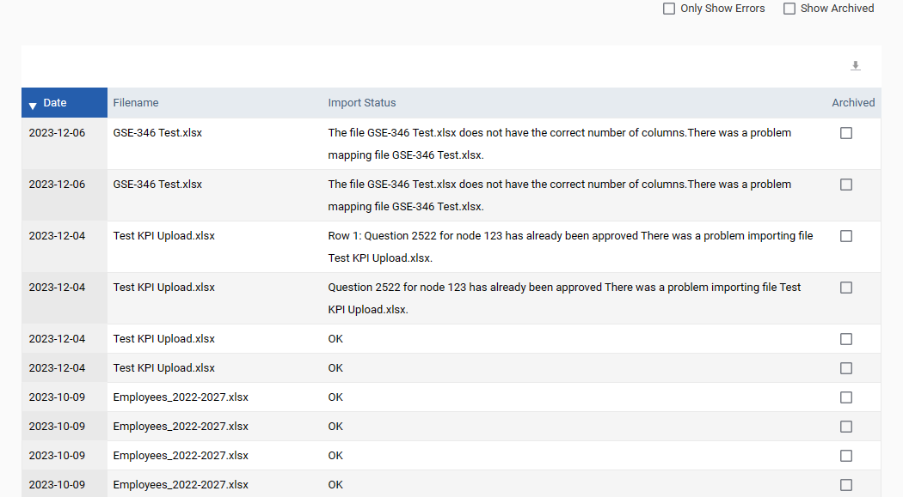

The SFTP log can be accessed via Admin Settings > SFTP Log. If files are uploaded using the File Transfer Protocol (FTP) then this is recorded in this log. Please be aware that only files that have upload errors are displayed here when you first access this screen. If you want to check that files have uploaded successfully uncheck the ‘Only Show Errors’ box and all files that have been uploaded but not Archived will be displayed.
When the FTP log is exported it now displays the complete error message about any files that were not uploaded. These errors are generally due to a problem in the file e.g. missing data sources or typing errors. Please correct the errors and add your file to the FTP box again.
Once you have checked your files it is recommended that these files are archived on this screen by checking the ‘Archived’ tick box as that will mean that they will no longer be displayed on this screen unless the ‘Show Archived’ tick box is selected. Doing this will mean that you will very quickly be able to tell if there are any outstanding files that still have errors.
